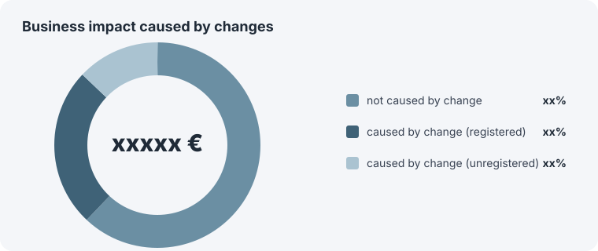
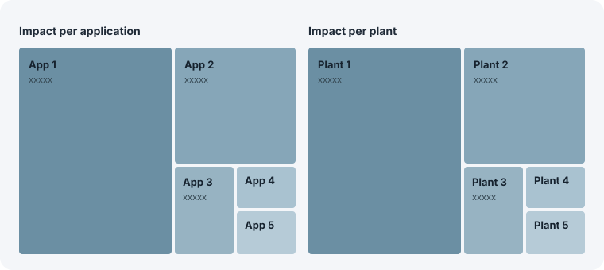
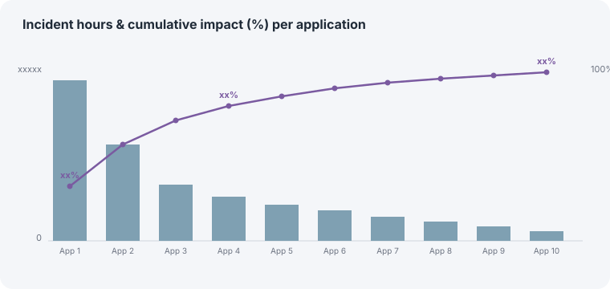
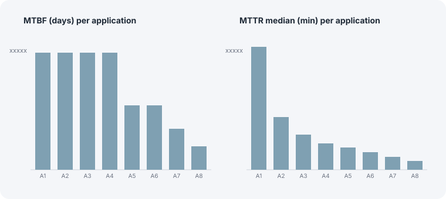
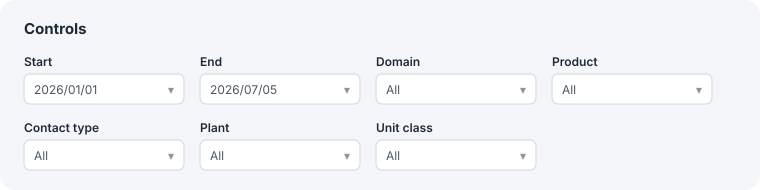
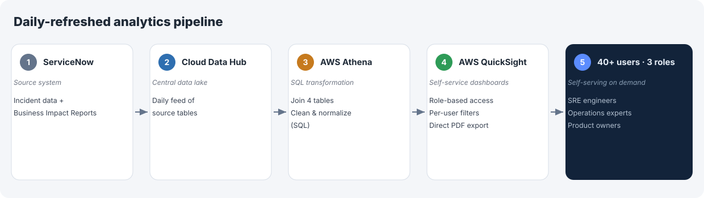

After migrating to a new ITSM system, the SRE department could no longer access the KPIs it needed. I built the analytics layer that quantified the operational business impact that was no longer visible after the migration to ServiceNow.
When our SRE department migrated its ITSM system to ServiceNow, it lost usable reporting: the platform could not join the tables our operational KPIs required. Acting as technical product owner and business analyst, I designed and built the analytics layer (AWS Athena + QuickSight on BMW Cloud Data Hub) that made business impact and other operational KPIs measurable and attributable — custom impact-intensity metrics (like affected units per minute of incident), Pareto diagrams, and more. The dashboard is self-service across many filters, so 40+ users across three roles (SRE engineers, operations experts, product owners) slice the data to their own applications and plants.
I owned this initiative as technical product owner and business analyst (formal role: Agile Master / Data Analyst), from problem definition through delivery. I partnered with the infrastructure team to understand the source data and the data architecture, and with SRE application and plant colleagues as the primary stakeholders.
Before the migration, the departmental operational report was prepared by hand in Excel, taking two full working days of manual work, once a month, with no professional tooling or defined rules.
Our ITSM system was migrated to ServiceNow, but the native ServiceNow dashboards could not create personalized KPIs for us, so there was no way to quantify the business impact of our own applications. The available data was also inconsistent: duplicated records, inconsistent formats, incorrect field values.
Once the pipeline was live, the analysis made several things visible that the department had never been able to see:



The operational KPIs were not off-the-shelf — I had to define them for our context and defend the choices:

I evaluated real-time streaming (Kafka) against daily batch (Athena + QuickSight on Cloud Data Hub). The decisions this data feeds run on a daily basis, so real-time would have doubled the cost and added maintenance for information no decision needed. Choosing the cheaper, less impressive architecture was the right call.
Discovery showed stakeholders needed different slices: provider ticket handling, issues by plant, impact-per-minute by application. Rather than build a separate report per need, I built one filterable tool (date range + seven categorical dimensions: domain, product, plant, contact type, unit class, and more) where each stakeholder self-serves. Role-based access was not optional either: data-privacy policy meant not every user could see every dataset, which is why QuickSight with granular access control plus per-user filtering won the front end.

A daily-refreshed pipeline:

Athena did the transformation the source system could not — joining incident data with the departmental Business Impact Reports across four tables, plus the cleaning that turned dirty data into something trustworthy.
CREATE OR REPLACE VIEW "incident_impact_view" AS
SELECT
inc.*
, impact.*
, owner.*
, chg.*
FROM
incidents inc
LEFT JOIN business_impact impact ON (inc.inc_id = impact.related_incident)
LEFT JOIN ownership owner ON (impact.prb_id = owner.prb_id)
LEFT JOIN changes chg ON (inc.caused_by_chg = chg.chg_id)
WHERE inc.department IN ('dept-a', 'dept-b');
Simplified & anonymized — table, view and department names replaced.
QuickSight turned it into views stakeholders self-serve, built to copy straight into the management round with no rework.
| Before | After | |
|---|---|---|
| Business impact | Invisible | Business impact quantified and attributed per application and plant |
| Report creation | 2 working days/month, manual in Excel (approx. 24 person-days/year) | Near-zero; presentation-ready |
| Users / reach | 1 analyst producing 1 monthly report | 40+ users self-serving, across several departments in the domain |
| Data access | Request → wait | Self-service, filtered, on-demand |
| KPIs available | Basic | MTTR, MTBF, affected units/min, Pareto, risk attribution |
| Table joins | Not possible in ServiceNow | 4-table joins in Athena |
| Running cost | — | approx. $500/month (≈ half of real-time) |
The monthly report that consumed two full working days (approx. 24 person-days/year) is eliminated; 40+ users across SRE engineers, operations experts and product owners now self-serve on demand, with the dashboards available to several departments within the domain — an option that was not available before.
Maintenance is minimal: human input only when the datasets change.